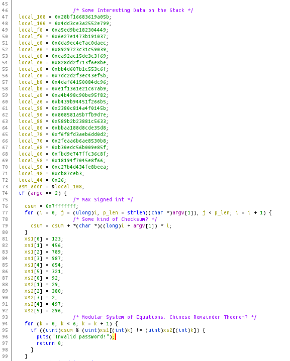
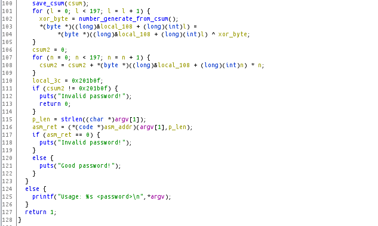

I recently was introduced to crackmes.one by a coworker. This is a writeup of pjenik's hidden_password challenge. As you will see, it is a great problem to tackle with angr.
The challenge provides us with a hidden_password binary. To start off I performed some basic checks.
[michael@pwn ~/Pwn/CrackMes]$ file hidden_password
hidden_password: ELF 64-bit LSB pie executable, x86-64, version 1 (SYSV), dynamically linked, interpreter /lib64/ld-linux-x86-64.so.2, BuildID[sha1]=8064a21b129bd27bbcc843f635aae01b7b154a2a, for GNU/Linux 3.2.0, stripped
[michael@pwn ~/Pwn/CrackMes]$ checksec --file=hidden_password
RELRO STACK CANARY NX PIE RPATH RUNPATH Symbols FORTIFY Fortified Fortifiable FILE
Partial RELRO No canary found NX disabled PIE enabled No RPATH No RUNPATH No S
So we have a 64-bit ELF executable with an executable stack. This will come into play later. Next I loaded the binary into Ghidra. In Ghidra we can see some interesting data being loaded on the stack, and some sort of checksum being calculated.
Next, the binary stores our "checksum" and uses it to seed a number generator to XOR against that stack data from the beginning. After that it calculates another checksum before executing the decoded shellcode on the stack. Ouch!
My first instinct was to do some math, but then I decided to try out the angr library. To avoid complications, I used the pre-built docker image. Getting up and running is as simple as running the following two commands!
$ docker pull angr/angr
$ docker run -it -v $(pwd):/pwn --rm angr/angr
After a while of reading the (very helpful) angr docs and testing things in ipython, it was apparent that angr was not going to have an easy time understanding the call into the shellcode. But it would still be great at crunching out the checksum values! After a few hours I came up with the following.
#!/usr/bin/env python3
"""
ANGR Solver Script for hidden_password crackme.
Michael Hoefler 2022
"""
import logging
import claripy
import string
import angr
l = logging.getLogger('angr')
# get some more logging output
l.setLevel(logging.INFO)
TARGET = "hidden_password"
# the main angr project
p = angr.Project(TARGET,
auto_load_libs=False,
main_opts={'base_addr':0x00})
# 14-char password
# fixed this after sucessfully decoding and disassembling
# the shellcode
pw = claripy.BVS("password", 8 * 14)
# entry state with password in argv
s = p.factory.entry_state(args=[TARGET, pw])
# ascii printable password
for byte in pw.chop(8):
s.solver.add(byte < 0x7f)
s.solver.add(byte >= 0x20)
# simulation manager with our entry state
# using veritesting to trim down the number of branches
sm = p.factory.simulation_manager(s, veritesting=True)
sm.explore(find=0x1511, # right before the shellcode execution
avoid=[0x1451, 0x14fe, 0x155b, 0x1569]) # invalid password
# print our results
if sm.found:
l.info(f'Found {len(sm.found)} Potential Solutions...')
for sol in sm.found:
l.info(sol.solver.eval(pw, cast_to=bytes))
else:
l.info('No Solutions Found...')
The script is pretty simple but there is a lot going on under the hood. Initially I had specified a 30 character password and had veritesting toggled off. Without the veritesting, the script runs indefinitely.
This is confusing at first, but it is caused by a nearly infinite number of branches being created by the initial loop over the strlen of the input. Since I specified 30 bytes for the password, the length could range from [0-30], and those bytes could range [0-255]
All of these cases lead to different outcomes, but many of the outcomes are very very similar. Veritesting allows angr to merge branches which are in very similar states. This speeds up the script tremendously.
$ ipython -i crackme.py
IPython 8.2.0 -- An enhanced Interactive Python. Type '?' for help.
INFO | 2022-08-04 06:31:10,075 | angr.project | Loading binary hidden_password
INFO | 2022-08-04 06:31:10,089 | angr.project | Using builtin SimProcedure for unresolved __libc_start_main from libc.so.0
INFO | 2022-08-04 06:31:10,089 | angr.project | Using builtin SimProcedure for unresolved puts from libc.so.0
[... snip ...]
INFO | 2022-08-04 06:31:26,843 | angr | Found 1 Potential Solutions...
INFO | 2022-08-04 06:31:26,843 | angr | b" ,'nnx~!zlr2}1"
If you needed a space heater, you've got one now! So clearly " ,'nnx~!zlr2}1" isn't the solution to the crackme, but it does pass the checksums. So this means that we can load the binary into GDB and read the decoded shellcode!
gef$ b *0x555555555542 # call rdx
gef$ r " ,'nnx~!zlr2}1"
gef$ si
gef$ x/50i $rip
This gives us the following assembly. Note that the first parameter RDI is our password and the second parameter RSI is the length of the password. In order to win, we need to return with RAX = 1.
=> 0x7fffffffe450: push rbp
0x7fffffffe451: mov rbp,rsp
0x7fffffffe454: mov QWORD PTR [rbp-0x38],rdi
0x7fffffffe458: mov QWORD PTR [rbp-0x40],rsi
0x7fffffffe45c: movabs rax,0xfbe0bce158ca53e2
0x7fffffffe466: mov QWORD PTR [rbp-0x12],rax
0x7fffffffe46a: mov DWORD PTR [rbp-0xa],0x95d8d4a7
0x7fffffffe471: mov WORD PTR [rbp-0x6],0xb283
0x7fffffffe477: movabs rax,0x9497e38e34a6368a
0x7fffffffe481: mov QWORD PTR [rbp-0x20],rax
0x7fffffffe485: mov DWORD PTR [rbp-0x18],0xcabcb8d5
0x7fffffffe48c: mov WORD PTR [rbp-0x14],0x80b7
0x7fffffffe492: mov QWORD PTR [rbp-0x2e],0x0
0x7fffffffe49a: mov DWORD PTR [rbp-0x26],0x0
0x7fffffffe4a1: mov WORD PTR [rbp-0x22],0x0
0x7fffffffe4a7: cmp QWORD PTR [rbp-0x40],0xe
0x7fffffffe4ac: je 0x7fffffffe4b5
0x7fffffffe4ae: mov eax,0x0
0x7fffffffe4b3: jmp 0x7fffffffe513
0x7fffffffe4b5: mov DWORD PTR [rbp-0x4],0x0
0x7fffffffe4bc: jmp 0x7fffffffe506
0x7fffffffe4be: mov eax,DWORD PTR [rbp-0x4]
0x7fffffffe4c1: movsxd rdx,eax
0x7fffffffe4c4: mov rax,QWORD PTR [rbp-0x38]
0x7fffffffe4c8: add rax,rdx
0x7fffffffe4cb: movzx edx,BYTE PTR [rax]
0x7fffffffe4ce: mov eax,DWORD PTR [rbp-0x4]
0x7fffffffe4d1: cdqe
0x7fffffffe4d3: movzx eax,BYTE PTR [rbp+rax*1-0x12]
0x7fffffffe4d8: xor edx,eax
0x7fffffffe4da: mov eax,DWORD PTR [rbp-0x4]
0x7fffffffe4dd: cdqe
0x7fffffffe4df: mov BYTE PTR [rbp+rax*1-0x2e],dl
0x7fffffffe4e3: mov eax,DWORD PTR [rbp-0x4]
0x7fffffffe4e6: cdqe
0x7fffffffe4e8: movzx edx,BYTE PTR [rbp+rax*1-0x2e]
0x7fffffffe4ed: mov eax,DWORD PTR [rbp-0x4]
0x7fffffffe4f0: cdqe
0x7fffffffe4f2: movzx eax,BYTE PTR [rbp+rax*1-0x20]
0x7fffffffe4f7: cmp dl,al
0x7fffffffe4f9: je 0x7fffffffe502
0x7fffffffe4fb: mov eax,0x0
0x7fffffffe500: jmp 0x7fffffffe513
0x7fffffffe502: add DWORD PTR [rbp-0x4],0x1
0x7fffffffe506: mov eax,DWORD PTR [rbp-0x4]
0x7fffffffe509: cmp eax,0xd
0x7fffffffe50c: jbe 0x7fffffffe4be
0x7fffffffe50e: mov eax,0x1
0x7fffffffe513: pop rbp
0x7fffffffe514: ret
Reading through this assembly it becomes clear that it is just a simple XOR with the values loaded onto the stack from 0x7fffffffe45c-0x7fffffffe48c. Our password is XORed against one of the size 14 keys and compared to the other one. To reverse this process we can just XOR the two keys together (and fix the endianness).
This yields the password hello_world_42 which is successful against the hidden_password crackme. Thanks to pjenik for the awesome cracking challenge!
[michael@pwn ~/Pwn/CrackMes]$ ./hidden_password hello_world_42
Good password!